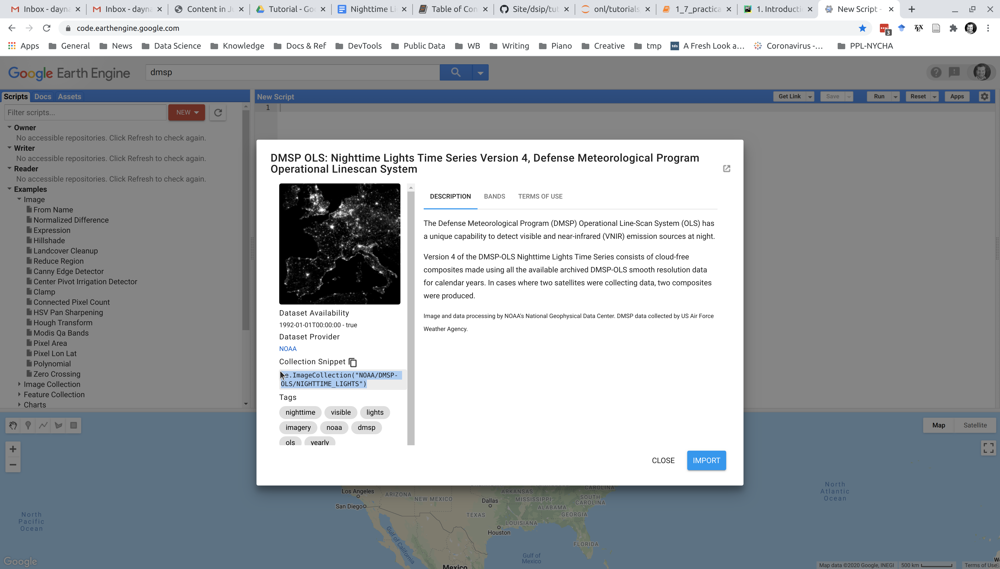

6. Practical exercise: image visualization (10 min)¶
When you’re working with maps and images, what is the first thing you want to do? Display it! In this exercise, we’re going to display nighttime lights for Nigeria in 1992 and 2013.
Prerequisites:
Make sure you have Python, Jupyter notebooks, and geemap installed and are familiar with these packages
If not, you’ll want to review:
Our tasks in this exercise:
Initialize a map object with geemap
Query DMSP-OLS data for 1992
Create (and adjust) the Nigeria 1992 nighttime lights layer
Change the map object’s basemap
Visual inspection
Repeat steps 2 and 3 for DMSP-OLS 2013 data
6.1. Initialize a map object with geemap¶
Later in this tutorial, we’re going to show you how to import other geospatial data files, such as the boundaries to countries or sub-national regions, to help you analyze nighttime lights.
For now, we’re going to focus our scene on Nigeria, but we’ll do that simply by centering our map on the capital city of Abuja, which we can find at approximately: latitude: 9.0 and longitude: 7.4.
We’ll set our map zoom factor to 6 to include the entire country in our view.
You should get in the habit of saving parameters as variables. This makes it easy to re-use your code for different values.
# !pip install geemap
# import geemap for our Python session
import geemap, ee
try:
ee.Initialize()
except Exception as e:
ee.Authenticate()
ee.Initialize()
# set our initial map parameters for Abuja, Nigeria
center_lat = 9.0
center_lon = 7.4
zoomlevel=6
# initialize our map
myFirstMap = geemap.Map(center=[center_lat,center_lon], zoom=zoomlevel)
# display our map
myFirstMap.addLayerControl()
myFirstMap
If you don't see a map: don't panic! But you've run into one of the challenges of interpreted open-source languages -- your Python packages and dependencies, including Jupyter notebook, and your computer's "back-end" software may not be in sync.
First, make sure geemap and jupyter are installed properly as per our earlier tutorials referenced above. If you’re using a virtual environment, make sure that’s activated and geemap is installed within it!
If that doesnt resolve the issue, another fix is to make sure your Jupyter extensions enable ipyleaflet by running this code in command line.
Recall from an earlier tutorial that in Jupyter notebooks you can make system calls (such as you would in command line prompt) by adding a bang (exclamaition point) to your notebook code, like this:
# !jupyter nbextension enable --py --sys-prefix ipyleaflet
You may have to close out and restart your notebook after this, but you should only have to do this once.
6.1.1. A note on troubleshooting¶
At this point, hopefully, you’ve got geemap set up and working.
If not, you’ll want to troubleshoot possible issues and there are many forums for discussing common problems, such as stackoverflow.com.
If you learn to do this, it will serve you well. Troubles can be frustrating, but “shooting” them requires problem-solving that helps you better understand what you’re doing and become a better programmer and data scientist.
6.2. Query DMSP-OLS data for 1992¶
6.2.1. Get DMSP-OLS image ID for 1992¶
Now we want to query our nighttime lights. We’re looking at the DMSP-OLS series. Images are what Google Earth Engine uses to describe raster files and ImageCollections are collections (like a time series) of images. We’re looking for the DMSP-OLS Nighttime lights ImageCollection.
https://code.earthengine.google.com/
It’s easy to search for particular collections. For example, if you’re using the GEE code editor, search for “DMSP” and it will prompt you for 2 collections: we want the nighttime lights.

Select the collection for “Nighttime lights” and in the window that appears, you’ll see the exact collect ID (highlighed in the lower left). NOAA/DMSP-OLS/NIGHTTIME_LIGHTS

For quering this data via the API, this ImageCollection ID is what we are looking for: NOAA/DMSP-OLS/NIGHTTIME_LIGHTS
That full collection is a lot of data; however. And all we really need is the image for 1992. Since the DMSP-OLS nighttime lights are available annually, we’re looking for a single Image.
Recall that the DMSP is composed of six satellites spanning 1992 to 2013. The satellite designated “F10” is what provided images for 1992.
HINT from Introduction to nighttime light data (10 min): NOAA`s National Center for Environmental Information gives the mapping of years and DMSP satellites.
Putting it together, the full file ID we need to query this image from GEE is: NOAA/DMSP-OLS/NIGHTTIME_LIGHTS/F101992
Again, let’s get in the habit of setting variables so we avoid repetition (including repeated typos!)
dmsp92id = "NOAA/DMSP-OLS/NIGHTTIME_LIGHTS/F101992"
6.3. Create (and adjust) the Nigeria 1992 nighttime lights layer¶
Now that we know what Image we’re looking for, we can query it via the Python API and add it as a layer to that map object we created earlier.
# create an ee object for our 1992 image
# note that for DMSP, there is only one band, so we dont need to worry about selecting a band.
dmsp92 = ee.Image(dmsp92id)
# ladd this image as a layer to our map object and call the layer: "DMSP NTL 1992"
myFirstMap.addLayer(dmsp92, name='DMSP NTL 1992')
# re-display our map
myFirstMap
Voila! We have a nighttime layer from the 1992 DMSP-OLS composite.
6.3.1. Changing opacity¶
You may notice it’s quite dark; however. You can always toggle the layer off, but if you want to visualize the nighttime lights over the basemap, you’ll want to change the opacity of your nighttime lights layer. Fortunately, this is very easy for us to do.
Our .addLayer function allows for other visual parameters, like opacity. Let’s give this layer an opacity of 75%:
myFirstMap.addLayer(dmsp92, name='DMSP NTL 1992', opacity=0.75)
Note: by giving our updated layer the same name (DMSP NTL 1992) we are over-writing the previous layer. If you wanted to create a new layer, this time with 50% opacity, but keep the previous layer, just change the layer name when you update, like DMSP NTL 1992 opc. 50%. Then you’d have both layers and you can toggle them on/off.
6.4. Creating a mask¶
Another important step to “clean” your image will be to create a mask that filters out zero or negative values, which can happen after preprocessing for noisy and low-light pixels.
This can be done when adding (or updating) a layer. The ee Image object we created, dmsp92, has a built-in method called .mask() and when we call that and pass the Image itself as an argument, we get the mask.
This time, let’s change the name so that we create a new layer. Then we’ll have a masked and non-masked 1992 layer:
myFirstMap.addLayer(dmsp92.mask(dmsp92), name='DMSP NTL 1992 masked', opacity=0.75)
6.5. Change the basemap¶
Go to the cell with our map object and re-run the cell, updating it. You should now have two layers (intial 1992 and masked 1992) and you can toggle between them. You can imagine that the masked layer makes it easier to inspect the underlying basemap layer.
The default basemap is Open Street Maps (OSM). But if you want to analyze nighttime lights according to land build-up as seen in daylight images (such as from LANDSAT), you can change the basemap (if you’re more advanced you can search GEE for your own layers of course).
There are a few dozen options to choose from for geemap basemaps. While there’s not documentation yet, you can see the options in the source code itself.. Some of these have also been added to ipyleaflet’s library.
Navigate to that source code link and review the options. Let’s choos the default “SATELLITE” basemap which appears to be of the Google maps daytime satellite view.
Because we’re adding a basemap, we’ll need to re-initialize our map object, add our new basemap to it, and then add the layers we created initially. If we’ve used variables for our parameters, this is simple to do.
# initial map object (this overwrites our previous object saved at this variable name)
# centered on Abuja
myFirstMap = geemap.Map(center=[center_lat,center_lon], zoom=zoomlevel)
# add our alternate basemap
myFirstMap.add_basemap("SATELLITE")
# add our 1992 (and remember to create a mask and change opacity to 75%)
myFirstMap.addLayer(dmsp92.mask(dmsp92), name='DMSP NTL 1992', opacity=0.75)
# display our map
myFirstMap
6.6. Visual inspection¶
Now you can look at nighttime layer and compare it to our satellite view basemap.
Take a look around. Interact with the map you just created:
Toggle the satellte basemap off to compare nighttime lights to the road network as well as the satellite view.
Navigate to Abuja and zoom in.
Can you see where the overlap of the nighttime lights are with the roads and “built up” areas?
How well do they overlap?
Are there any surprises?
What about other parts of Nigeria?
6.7. Add a layer for DMSP-OLS 2013¶
Now let’s look at nighttime lights for 2013.
To do this, we can just add a new layer to our object.
Can you do this on your own?
# your code here
Need some hints?
# find the Image ID for DMSP-OLS 2013 and set it as a new variable (hint: the satellite's name is "F18")
# create the ee object
# add this image object as a new layer in your map
# name it "DMSP NTL 2013", create a mask, and give it an opacity of 75%.
You should have been able to add a new layer and when refreshing the cell for myFirstMap above, see your new layer. If not, scroll down to see the code…
# find the Image ID and set it as a new variable (hint: the satellite's name is "F18")
dmsp2013id = "NOAA/DMSP-OLS/NIGHTTIME_LIGHTS/F182013"
# create the ee object
dmsp2013 = ee.Image(dmsp2013id)
# add this image as a new layer in your map object, myFirstMap
# name it "DMSP NTL 2013" and give it an opacity of 75%.
myFirstMap.addLayer(dmsp2013.mask(dmsp2013), name='DMSP NTL 2013', opacity=0.75)
# display the map object again...
myFirstMap
Now that you have both years, you can toggle back and forth and compare the differences.
Do you see any major changes?
Zoom in for a closer look at Abuja: do you see the growth from 1992 to 2013?
6.8. Create a split planel view¶
We’ve added our 2013 layer to compare with 1992, but it’s kind of annoying to toggle each layer. It’s also hard to truly compare. If we create a split panel view with a slider, we can more easily see the difference.
There is a built-in method in geemap for this, which makes it simple to do.
We’ve already created our 1992 and 2013 DMSP image objects and saved those as variables, so no need to re-create. We just need to generate a tile layer with each. But remember to mask them and let’s again set opacity to 75%:
# generate tile layers from the ee image objects, masking and changing opacity to 75%
dmsp92_tile = geemap.ee_tile_layer(dmsp92.mask(dmsp92), {}, 'DMSP NTL 1992', opacity=0.75)
dmsp2013_tile = geemap.ee_tile_layer(dmsp2013.mask(dmsp2013), {}, 'DMSP NTL 2013', opacity=0.75)
If you want to create a new map object you can, just as before and center it using the parameters for Nigeria we set before:
newMap = geemap.Map(center=[center_lat,center_lon], zoom=zoomlevel)
But you can also just alter the initial object we created, which is what we’ll do. We can call the object’s .split_map() method and set the left and panels with our 1992 and 2013 tile layers.
myFirstMap.split_map(left_layer=dmsp92_tile, right_layer=dmsp2013_tile)
Now when you refresh your map object above, you’ll see a slider and the 1992 nighttime lights layer on the left with 2013 on the right.
Slide it over Abuja: can you see the difference in the distribution of lights in 2013 compared to 1992?
Look at some other regions around Nigeria.
6.9. On your own…¶
Our primary objective was to get a feel for using geemap, GEE, and Jupyter notebooks. Hopefully, you’ve now done that.
Try comparing other years of DMSP-OLS data by creating new layers. Keep exploring Nigeria or try navigating (and centering your initial map object) on other parts of the world.
This interactive viewer is a simple way to view changes in an area, but the real power is in conducting analysis. You can image that quantifying the difference in nighttime lights from 1992 to 2013 or calculating the slope of change across a time series could reveal areas of high or low growth and other patterns.
We’ll learn how to do this as well as deal with important issues of calibration. These satellite detectors, like all sensors, can change over time or have inherent biases (known as “instrument bias”), so it’s important understand how to address these in order to do a fair comparison.